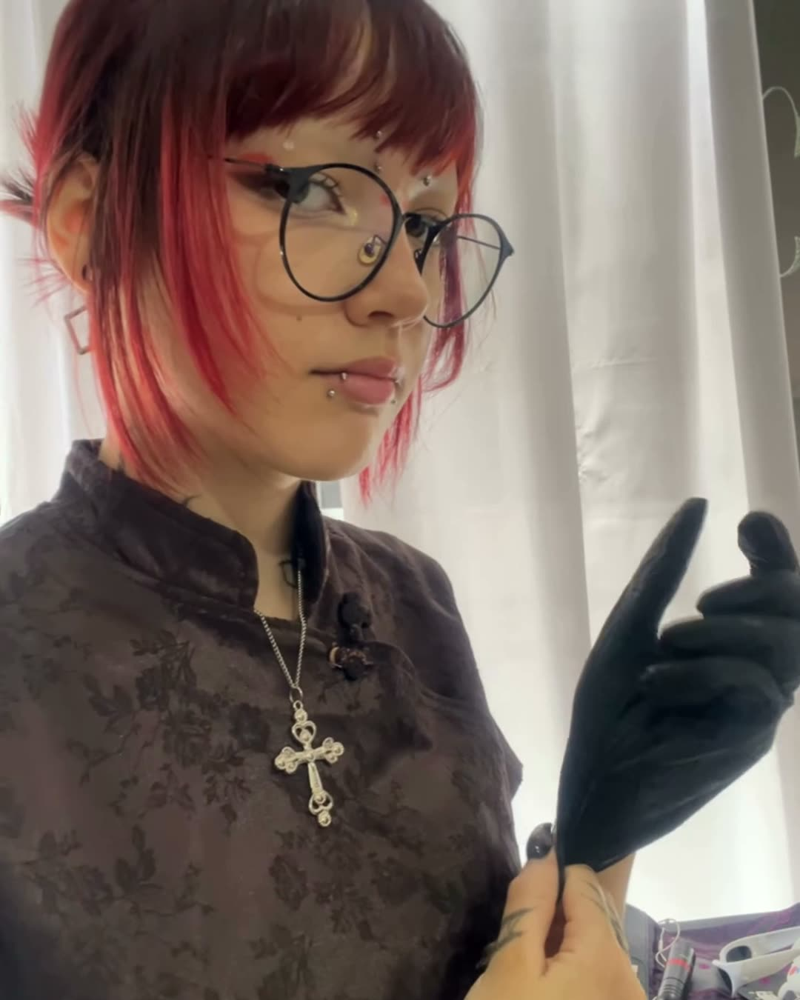

A artista e o processo
Trinity, autoria na pele.

Tatuadora no Espírito Santo, atende na Glória, Vila Velha, no estúdio Dangeon Ink. Seu portfólio passa por anime e mangá, lettering e composições com preto marcante.
Texto biográfico completo: pendente de aprovação da artista.
Arte autoral, freehand e encomendas
A Trinity quer reunir num só lugar suas artes autorais, o trabalho em freehand e as encomendas de desenho. Os conteúdos reais serão adicionados conforme os arquivos forem fornecidos.
Processo
Do primeiro contato à sessão.
- 01
Você conta a ideia
Pelo formulário: ideia, região do corpo, tamanho aproximado e referências.
- 02
Ela avalia
A Trinity continua respondendo pessoalmente. O pedido organizado ajuda a avaliar mais rápido, sem prometer prazo.
- 03
O desenho
Arte pensada para a anatomia. Política de rascunho antes da sessão (ex.: envio com antecedência e finalização na sessão): em consulta, não definida.
- 04
A sessão
Duração, valor e disponibilidade são definidos por ela após a avaliação.